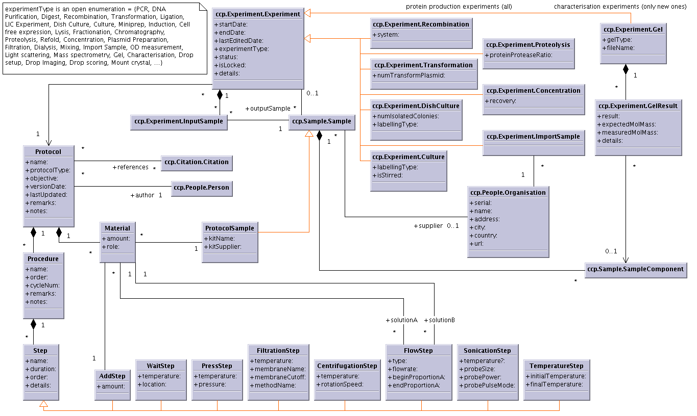
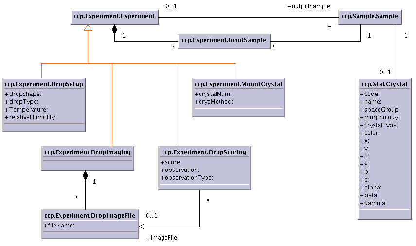
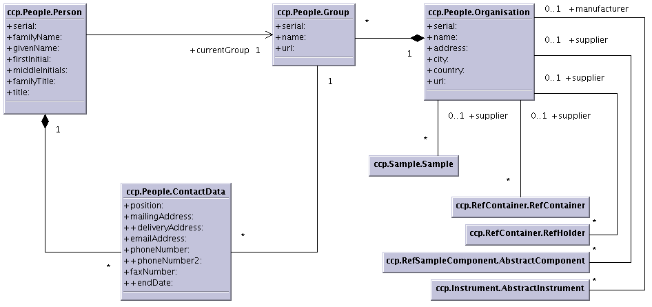
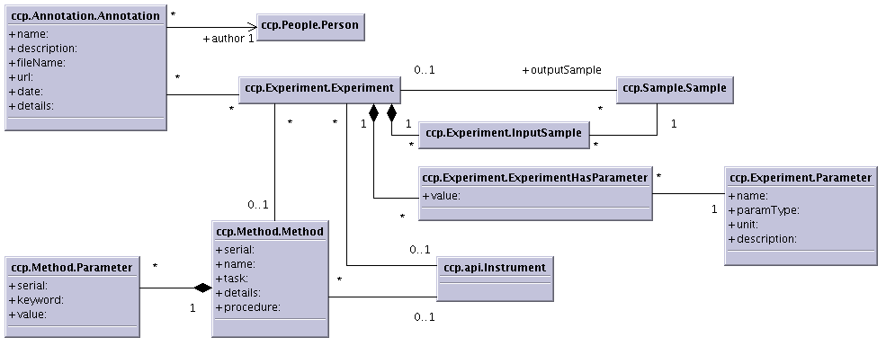

Data Model Modifications
________________________________________________________________________________________________________
EMBL-EBI Kim Henrick, Wim Vranken, Anne Pajon
University of Cambridge Rasmus Fogh, Wayne Boucher, Tim Stevens
Daresbury Laboratory Chris Morris
Diamond Alun Ashton
University of York Susy Griffiths
OPPF Jon Diprose
CNRS Gif/Yvette Anne Poupon, Eric Oeuillet
Dundee Geoff Barton geoff@compbio.dundee.ac.uk
Manchester Steve Prince steve.prince@umist.ac.uk
NRC Montreal Mirek Cygler, Stéphane Raymond, Xueli Li
Weizmann Institute Jaime Prilusky
EMBL Grenoble HTP Crystallisation: Jose A. Marquez, Martin Roewer, Jacques Chung
HTP Expression: Darren Hart, Franck Tarendeau, Benjamin Corbex
________________________________________________________________________________________________________
Table of Contents
UNITS 2
PACKAGE PROTOCOL 3
PACKAGE EXPERIMENT 5
PACKAGE ANNOTATION 7
PACKAGE EXPBLUEPRINT 8
PACKAGE REFCONTAINER 9
PACKAGE REFSAMPLECOMPONENT 10
PACKAGE SAMPLE 11
PACKAGE LOCATION 12
PACKAGE PEOPLE 13
PACKAGE METHOD 14
PACKAGE INSTRUMENT 15
All values are floats and they are going to be stored in a fixed SI unit. Because the user is going to enter these values in different unit, a displayUnit will be added.
For concentration where three different types of value can be stored, three attributes are going to be created (concPerMol, concPerMass, concPerVolume) with fixed SI unit.
Rasmus suggested to keep the attrs concentration and concentrationUnit with a closed enumeration attached to it [kg/m3 (mass density), mol/m3 (amount-of-substance concentration), m3/m3 (volume fraction), mol/mol (amount of substance fraction), kg/kg (mass fraction)] because there are more than three different types of concentration to store.
For amount where three different types of value can be stored, three attributes are going to be created (mass, volume, number) with fixed SI unit.
Rasmus suggested to have the attrs amount and amountUnit with a closed enumeration attached to it [kg (mass), m3 (volume), ? (number)].
? What do you think? If we adopt the attributes concentrationUnit and amountUnit with a closed enumeration, it will be easier to increase the number of units in future for these two values.
? Which unit should be used for the amount value expressed in number?
Add open enumeration: protocolType = {Pcr, DnaPurification, Digest,...}
? I'm not sure about the class name, since a "protocol" to a scientist seems to mean a recipe for a whole series of planned experiments. Can it be ExperimentMethod?
Add open enumeration: flowStepType = {fixed volume, one solution flow, 2 solutions gradient, ...}
? How are solutionA and solutionB defined?
Add attr centrifugeModel ???
Add attr distFromAxis ???
Add attr numOfG ???
? Should we add more attributes like the one listed above for CentrifugationStep?

Add attr labellingType = {SelenoMet, SelenoCys, C13, N15, C13-N15,...}
Add attr gelType = {agarose 1%, SDS-PAGE 14%, ...}
Add attr result = {band at expected weight, band at unexpected weight, no band}
Add a link to the class Annotation
Remove attr isModel (old isTemplate)
Remove attr protocolDetails
Modify link between Experiment and Instrument: derived link from Method
Add link between Experiment and Method
Modify attr experimentType = {PCR, DNA purification, ...}. The open enumeration will carry the experiment type, and all experiment subtypes that can be fully described by the protocol class will be removed like PCR, DNA Purification, ...
Remove attr sampleIoType
Add attr amountUnit as closed enum = [kg (mass), m3 (volume), ? (number)]
Add attr displayUnit
A generic way of handling any type of parameters for experiment will be to add two new classes:
new class ccp.api.Experiment.Parameter attrs [name | type | unit | description]
new class ccp.api.Experiment.ExperimentHasParameter attrs [value]
This will give the possibility to store any kind of experiments.
new class ccp.api.Experiment.LightScatResult attrs [ intensity | expectedMolMass | measuredMolMass ]
class ccp.api.Experiment.LightScaterring attrs [ proteinTreatement | radiusSize | polydispersity ]

Add derived attr position (derived from MolResidue.seqId)
Add method getPosition()
Add attr description
Add derived attr fileName from memops.api.Implementation.DataLocation.path
Add derived attr url from memops.api.Implementation.DataLocation.url
Add attr date
Add attr details
Add a link to memops.api.Implementation.DataLocation
Add a link to Person (+author)
NB: Change all the attr fileName to a link to memops.api.Implementation.DataLocation and derived the attr fileName
Add a link to ccp.api.People.Person called owner
Add attr numColumn e.g. 12
Add attr columnName e.g. 8
Add attr columnSpacing
Add attr numRow e.g. 1,2,3,4,5,6,7,8,9,10,11,12
Add attr rowName e.g. A,B,C,D,E,F,G,H
Add attr rowSpacing
Change attr numSubunits -> capacity
Remove attr vendorName
Add link to ccp.api.People.Organisation called supplier
Add attr catalogNum
Add attr length
Add attr wireWidth
Remove attr vendorName
Add link to ccp.api.People.Organisation called supplier
Add attr catalogNum
? Should we create a subclass of RefContainer for the crystal mounting specific attributes?
componentType enum: lower case as molType in Molecule
Remove attr vendorName
Add link to ccp.api.People.Organisation called supplier
Add attr catalogNum
Add attr pH. This would mean having different Substance objects for phosphate buffers at different pHs.
componentType enum: add chemShiftRef (should be an open enum)
The substance class is used to store not only mixtures but also components for which you do not want to create a molecule for.
Detergent (NonPolyMolComp or Substance?): Critical Micelle Concentration in pure water is an important parameter
Change class name RestrictionEnzyme to Enzyme
Add attr constructType = {empty, with target, bac, cosmid, ...}
Add attr empiricalFormula
Add attr expectedMolMass (not derived if descriptor not frozen)
Add attr measuredMolMass
Remove attr molecularMass
Add derived attr length
Add method getLength = endSeqId – starSeqId
Add attr status: {cut, uncut, ...}
Add link to ccp.api.People.Organisation called supplier or used the experiment import with a link to Organisation ???
Attr derived attr creator from Experiment.creator
Add attr catalogNum
Add attr initialAmountUnit as closed enum = [kg (mass), m3 (volume), ? (number)]
Add attr currentAmountUnit as closed enum = [kg (mass), m3 (volume), ? (number)]
Add attr displayUnit
Move attr isotopicLabelling to class SampleComponent.PolyMolComp
Change attr isotopicLabelling to labellingType, and add an open enumeration {SelenoMethionine, SelenoCysteine, N15, C13, N15+C13, ...} (look at BioMagResBank labelling)
Add attr concentrationUnit closed enum = [kg/m3 (mass density), mol/m3 (amount-of-substance concentration), m3/m3 (volume fraction), mol/mol (amount of substance fraction), kg/kg (mass fraction)]
Add attr displayUnit
Add assessmentMethod as link name to ccp.api.Method.Method
change attr count -> numberOfInstances or numInstances
Check location validity for samples when they are part of an holder and this holder has a particular location
Add attr room
Add link to Laboratory or Organisation ?
Add attr deliveryAddress
Add attr phoneNumber2
Remove attrs position, addresses and phone/fax numbers because they depend on the laboratory which this person is affilated with.
Change class name Laboratory to Group

Add attr name
Add attr unit ???

Remove attr manufacturer
Add link to ccp.api.People.Organisation called manufacturer
Add link to Method
Add attr columnType
Add attr volume
Add link to ccp.api.Method.Method called loadingMethod